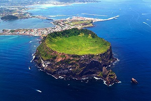

성산일출봉
성산일출봉은 제주를 대표하는 자연경관 중 하나로 제주의 많은 분화구 중 드물게 바다에서 분출한 화산이다. 약 30분 정도 소요되는 182m 정상에 가면 지름 600m의 분화구를 볼 수 있다. 분화구의 가장자리가 성벽처럼 보인다고 하여 성산, 정상에서 보는 일출이 장관이라고 하여 일출봉이라고 한다.
성산일출봉은 제주를 대표하는 자연경관 중 하나로 제주의 많은 분화구 중 드물게 바다에서 분출한 화산이다. 약 30분 정도 소요되는 182m 정상에 가면 지름 600m의 분화구를 볼 수 있다. 분화구의 가장자리가 성벽처럼 보인다고 하여 성산, 정상에서 보는 일출이 장관이라고 하여 일출봉이라고 한다.
